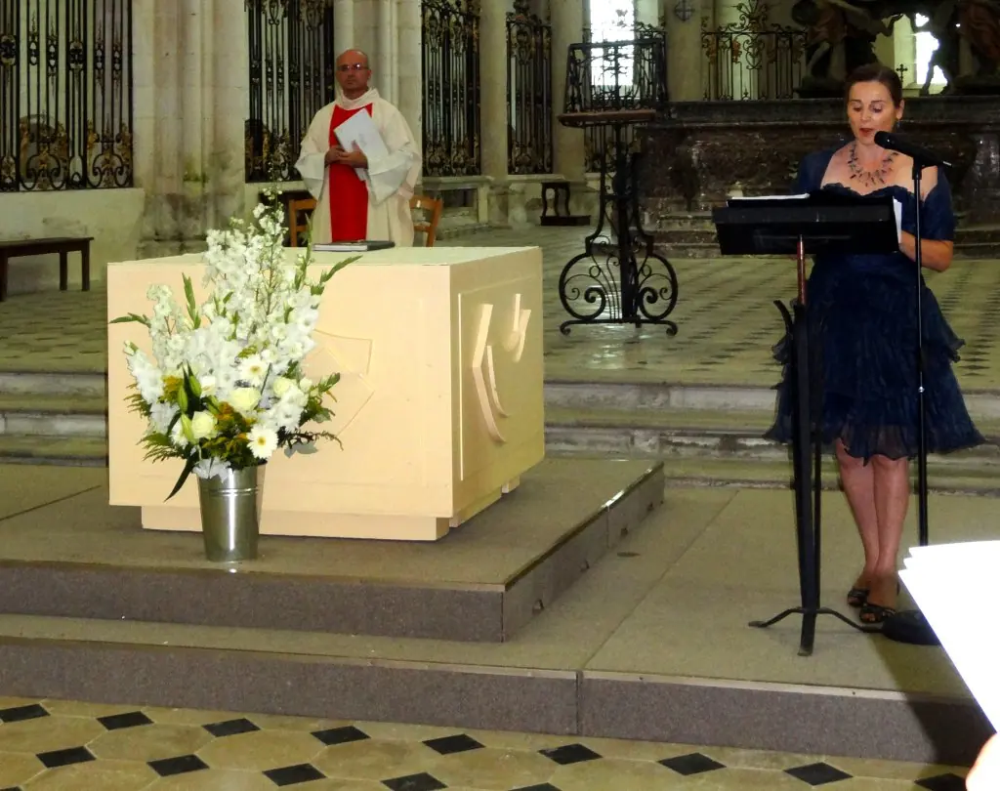

Ce que nous proposons
Activités
Récitals, mariages, liturgie, construction d'orgues : tout ce que fait l'association.
Répertoire
Toute la musique de votre cérémonie
De la musique ancienne aux compositeurs contemporains, dans toutes les langues, selon vos souhaits.
- Entrée : Aria de Bach, Canon de Pachelbel, Trumpet Voluntary de Clarke
- Bouquet à la Vierge : Ave Maria de Schubert, Gounod, Caccini… (350 versions possibles)
- Signature des registres : Cantate 147 de Bach
- Sortie : Toccata de Widor, Marche nuptiale de Mendelssohn
